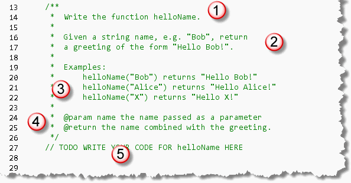
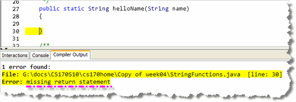
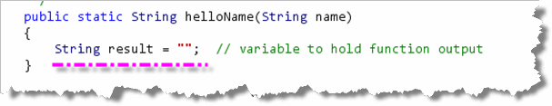
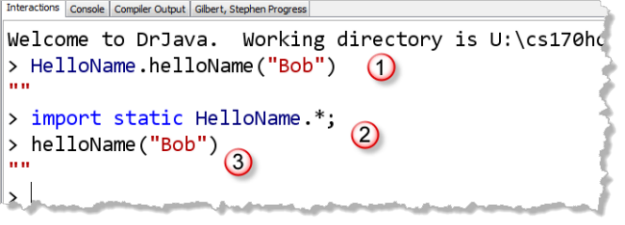
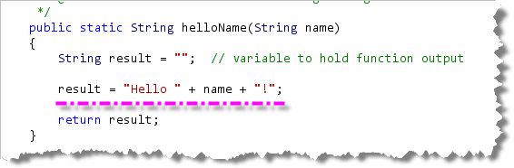
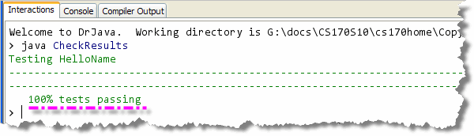

Now, it's your turn to get some practice writing your
own functions. You should have already read Chapter 5—Writing Functions
first. Then, you'll want to start getting into
shape for the programming proficiency problems, right?
Now, it's your turn to get some practice writing your
own functions. You should have already read Chapter 5—Writing Functions
first. Then, you'll want to start getting into
shape for the programming proficiency problems, right?
To make sure your lab problems are recorded for CS 122, make sure you log into Codingbat and paste your answer into the appropriate problem. You may work on the lab assignments after the lab period, but your scores won't be recorded after class is over.
Writing helloName
In DrJava, open the file HelloName.java, which you'll find in this chapter's code folder, and we'll take a look at our first function exercise.
As you can see, there is not much in the class except
for a Javadoc comment providing the documentation for
the function that I want you to write.
The first one of these is the helloName
problem, which is the simplest string function exercise
that I could come up with.:

For each function problem you're given, you'll find:- The name of the function you are supposed to write.
In this case, you are writing a function named
helloName. - You'll be given some brief instructions about what the function should calculate. In this example, the function combines the name (passed as a parameter) with a greeting, and returns the whole thing.
- One of the most useful pieces of information you'll get is a set of examples. The examples will show different input and the expected output for those inputs.
- Every function problem will also provide Javadoc tags
for all the parameters (one
@paramtag for each parameter, in the order they are used), and an@returntag for the function. Usually, the description and examples are more useful for me. - Finally, you'll see a comment line that says something
like
//TODO WRITE YOUR CODE HERE. Replace that line with the header for your function.
Start With the Skeleton
 Always start by writing the "skeleton" for
your function. You want to make sure that your code starts out
syntactically correct, and then stays that way. As a side benefit,
often a bare-bones syntactically correct function skeleton will
actually pass some of the final tests, so you're sure to get some
points, even if you don't know how to completely finish a problem.
Always start by writing the "skeleton" for
your function. You want to make sure that your code starts out
syntactically correct, and then stays that way. As a side benefit,
often a bare-bones syntactically correct function skeleton will
actually pass some of the final tests, so you're sure to get some
points, even if you don't know how to completely finish a problem.
For a function, the first step towards writing a skeleton or "stub" is
to combine the return type, name, and parameters to write the header
and then add some braces to make the body. Here's an example:

Notice that:
- We got the return type by looking at the example
and the
@returnJavadoc tag. - We got the function name by looking at the first line in the problem definition as well as the examples. Make sure you spell the name exactly correct.
- We got the parameter name and type by looking
at both the example and the Javadoc
@paramtag.
NOTE: make sure that your functions are public. If
you forget to add the public then I won't be able
to test your code.
Complete the Skeleton
Notice that if you compile at this point, DrJava will tell you
that your function skeleton is actually
syntactically incorrect.

That's because we are missing thereturn statement that every function
must have.
Here's how to write the "first-cut", "no-thought" return
statement, just to get your code to compile and test.
- Create a local variable, of the same type as
the function return type. I usually name this
result. In this example,helloNamehas a return type ofString, so your first line should look like this:

I usually initialize theresultsvariable to the "empty" value for the type:"",0, orfalse. - Now, at the very end of your function, just add
return result;. This makes your function syntactically correct, so that it compiles and can be tested.

Informal Testing
Obviously, the helloName() function doesn't yet
do what it's supposed to do, since it only returns the empty
String, instead of a greeting. Once you've added the
code to construct the greeting, though, how will you know if you've
done it correctly?
Good question! Notice that this file only contains functions;
it doesn't have a main() method. The fastest
way to try out the function is to use the interactions pane,
like this:

Notice that in the Interactions Pane you can:- Call the function directly (after you've compiled, of course)
by using the name of the class that contains it (like you
would with the functions in the
Mathclass. - You can add a
static importline, like the one I've shown here, so that you can then call the functions without needing the class name in front of the methods. - Finally, when you do call the function, don't use a semicolon, and the DrJava Interactions Pane will print out the returned value for you to see.
When you do this, you can then compare the result printed with the expected returned value supplied in the comment for the method.
Using Check
While you're free to use the DrJava Interactions Pane for ad-hoc informal testing, you'll want to run the Check program that I've supplied, for more extensive (and actually easier) testing.
Here's the output running Check on our helloName()
skeleton:
 As you can see, half of the tests pass because the testing program
is able to find and run the function (so it is syntactically correct).
If your program is syntactically correct, the tests that check syntax do
pass at this point, even though you haven't added any logic
to your function yet. Of course none of the correctness tests
pass yet.
As you can see, half of the tests pass because the testing program
is able to find and run the function (so it is syntactically correct).
If your program is syntactically correct, the tests that check syntax do
pass at this point, even though you haven't added any logic
to your function yet. Of course none of the correctness tests
pass yet.
Note that although the method that we are testing is named
helloName() (starting with a lowercase letter,
like the standard Java conventions recommend), the test program
will always start with a capital letter. Please
don't start your functions with a capital though.
Remember, your function must be syntactically correct before it can be tested. Unless your program compiles without errors, the test program will not be able to run it. The easiest way to do that is to practice writing function skeletons, like the one I've shown you here, until it just becomes second nature.
Finish Up helloName
After all this work, actually finishing helloName is
kind of anticlimactic. Remember that the purpose of a function is
to transform inputs into output. In our case, we have one input,
the String parameter name, and one
output, the String variable result.
We can use simple concatenation to combine name
and a greeting, to produce the results specified by the problem
description like this:

Run Check after making these changes and you'll see that all of the tests now pass:
When you paste your code into the CodingBat Web site for the first part
of Lab 5A, you will need to remove the keyword static
from the header. You actually can solve all of the function problems we
will do without using static. This keyword is only needed
if you want to call your functions from main(), or, if you
need to do informal, ad-hoc testing as I've shown above.
Problem 3—Make Tags
The web is built with HTML strings like "<i>Yay</i>"
which draws Yay as italic text. In this example,
the "i" tag makes and which surround the
word "Yay". Write the function named makeTags(),
which, given tag and word strings,
returns the HTML string with tags around the word,
e.g. "<i>Yay</i>".
Here are the Javadoc tags:
@param tag the tag to apply@param word the word to apply the tag to@return an HTML string with tags around the word
Here are some examples:
makeTags("i", "Yay") returns "<i>Yay</i>"makeTags("i", "Hello") returns "<i>Hello</i>"makeTags("cite", "Yay") returns "<cite>Yay</cite>"
Test your function with the Check program. If you run into
difficulty, you may want to watch this video:

Note that many of my videos for the function exercises that we will do in this class make use of the Codingbat.com Web site put up by Nick Parlante at Stanford. When you do the exercise in DrJava, you will need to write the method heading yourself, something that Coding.bat does for you.
Problem 4—Extra End
Write the function named extraEnd(). Here are the
specifications:
Given a string, return a new string made of 3 copies of the last 2 characters of the original string. The string length will be at least 2.
Here are the Javadoc tags:
@param str the input string@return a string consisting of 3 copies of the last two characters.
Here are some examples:
extraEnd("Hello") returns "lololo"extraEnd("ab") returns "ababab"extraEnd("Hi") returns "HiHiHi"
Test your function with the Check program. If you run into
difficulty, you may want to watch this video:
To make sure your lab problems are recorded for CS 122, make sure you log into Codingbat and paste your answer into the appropriate problem. You may work on the lab assignments after the lab period, but your scores won't be recorded after class is over.